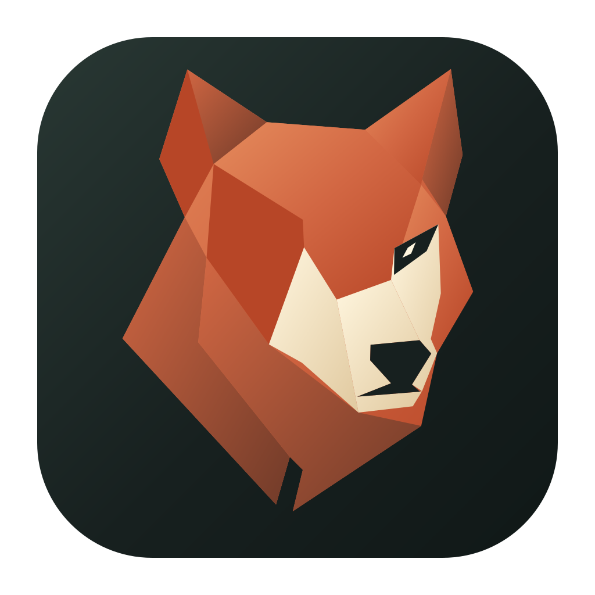
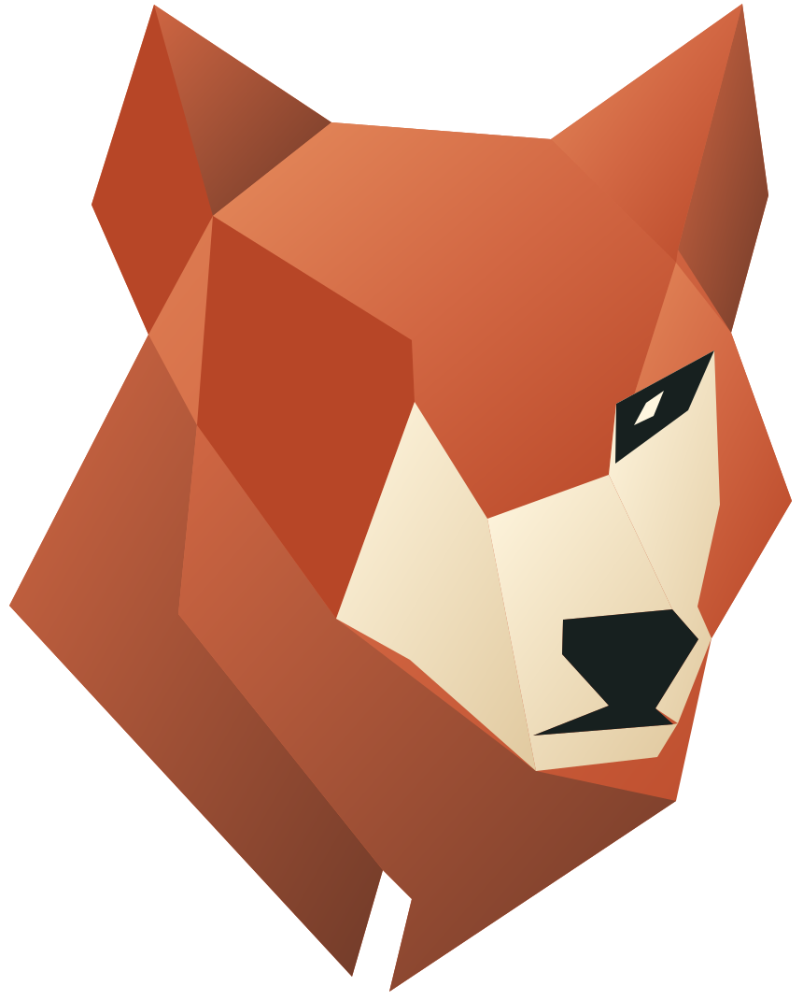
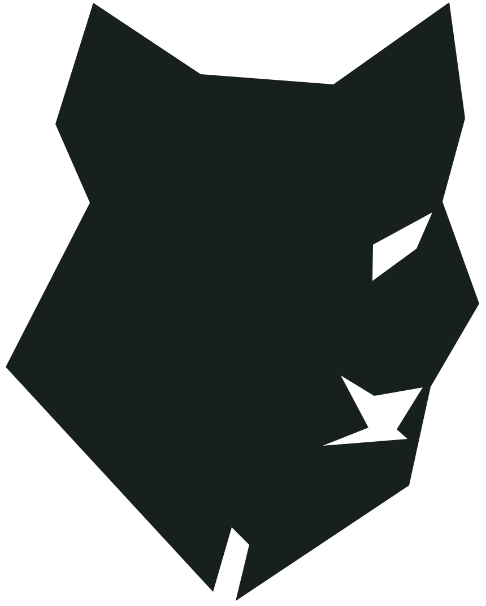
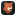
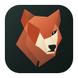
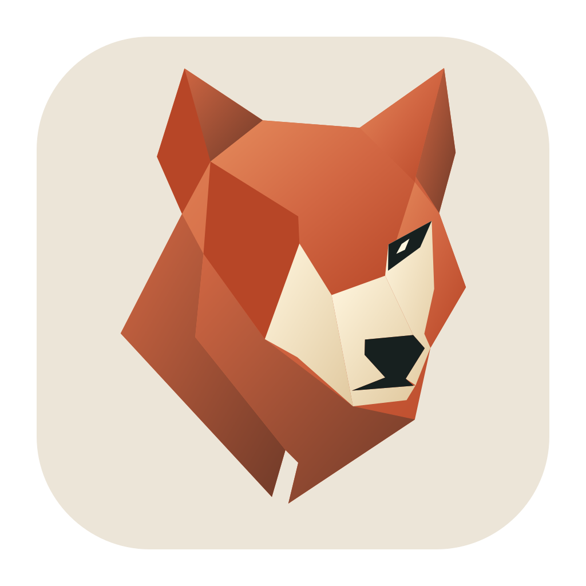
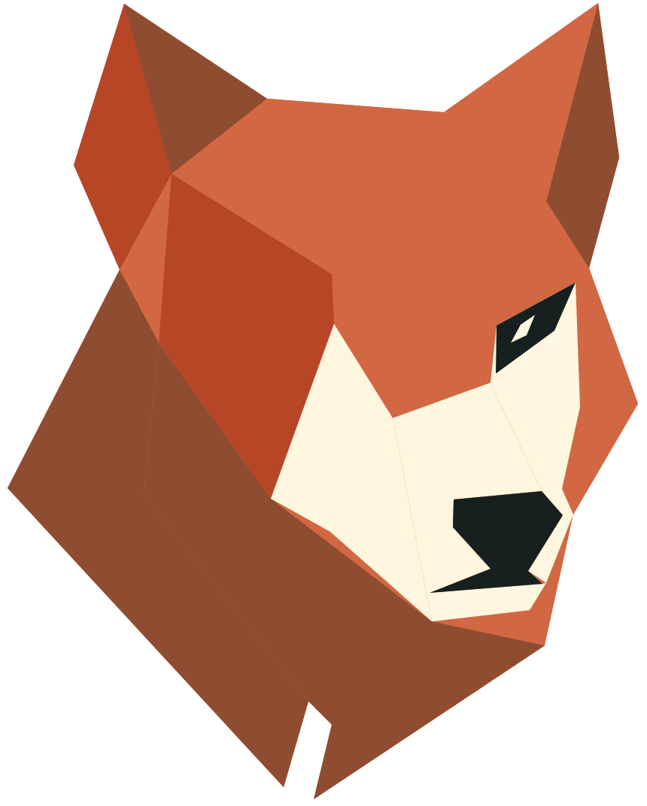

A distinct face for Loki’s Den. Copper facets, alert ears and an asymmetric silhouette—built to carry the identity from a browser tab to the desktop.
Logo package · Version 1 · September 2026




Actual-size desktop exports. The smallest sizes use fewer facets and a simpler silhouette.




Editable SVG • Transparent PNG • Web favicons & PWA • macOS ICNS & Xcode assets • Windows ICO • Linux hicolorIcon Composer source layers included. Export validation does not replace testing in a shipping app.